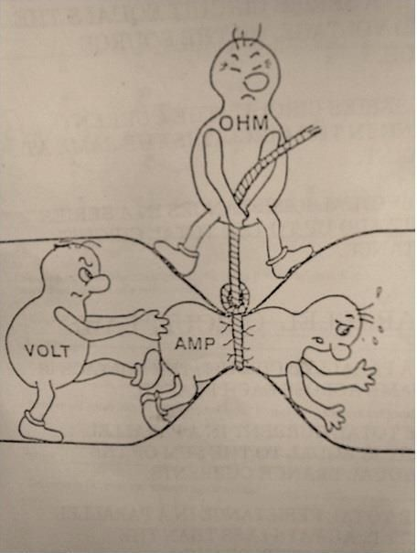
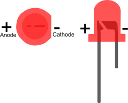
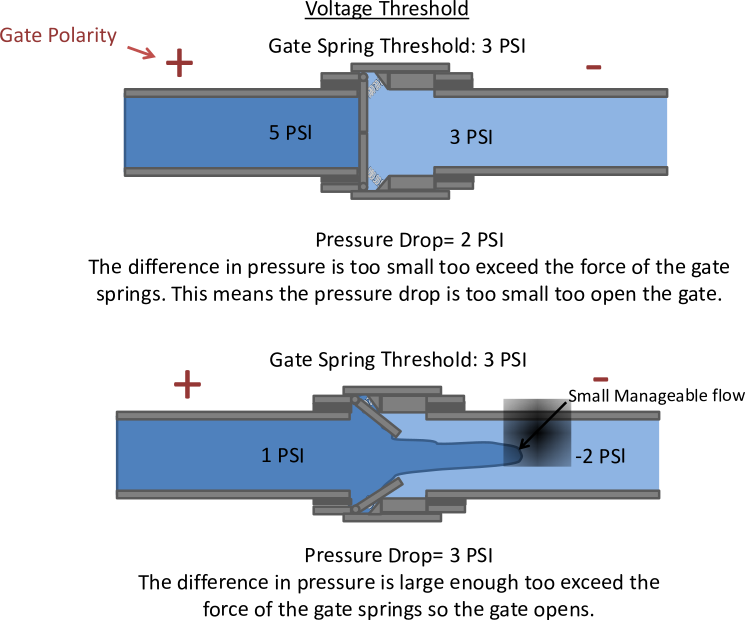
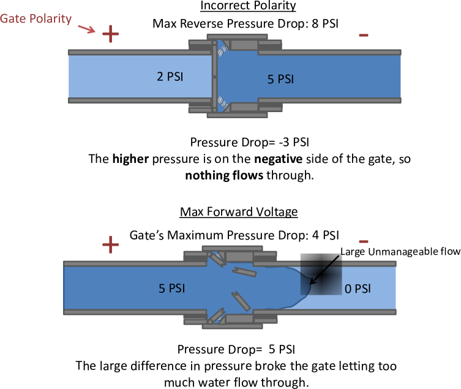

<meta name="author" content="Davis Cook"> 

<head>
   <script type="text/javascript" src="../SH/scripts/shCore.js"></script>
   <script type="text/javascript" src="../SH/scripts/shBrushmpide.js"></script>
   <link type="text/css" rel="stylesheet" href="../SH/styles/shCoreDefault.css"/>
   <script type="text/javascript">SyntaxHighlighter.all();</script>
</head>

<cf_Box Color="White" NoMargins="1">
  <table class="TBLAYOUT" style="width:100%;" cellpadding="0">
    <tr>
      <td width="50%" align="center">
		<span class="TB-PROJECTTITLE">
			Project 3:<br/>
			Fundamental Electric Properties
		</span>
      </td>
    </tr>
  </table>
 
    <table class="TBLAYOUT" style="width:100%;" cellpadding="0">
    <tr>
      <td valign="top">
      	<p>	    
			<span class="TB-H1">Circuit Basics </span> <br/><br/>
				<span class="TB-BODY"> <!--this is a comment -->
				Obviously circuits operate on electricity and electricity is the flow of charge- typically electrons.
				A simple analogy for Electric Circuits is water flowing through pipes. When building a plumbing system 
				it is important to keep track of the rate at which the water flows and pressure of the water. We describe 
				electricity similarly; Current is the rate at which electrons flow past a point while the Voltage is an 
				electrical pressure of sorts. The purpose of an electrical circuit is to accomplish some meaningful task 
				like generating light, heat or even a force. Electricity provides the means to transport energy to a Load 
				device, like an LED, to accomplish such a task. Depending on the circuit and load device moving to much 
				electricty can damage the circuit or its components. To prevent this Voltage and/or Current can be limited 
				through the use of Resistors. As the name implies Resistors work on the property of Resistance which is like 
				a form of electrical friction. Resistors dissipate energy as heat by either reducing the Current or Voltage 
				in a circuit. Below is an overview of the three basic electrical properties used in circuits.   <br/><br/><br/>
			</span>
		</p>
	</tr>
  </table>
  
  
  
    <table class="TBLAYOUT" style="width:100%;" cellpadding="0">
    <tr>
      <td valign="top">
      	<p>	    
	  
		<span class="TB-H1">Resistance</span> <br/><br/>
          <span class="TB-BODY"> <!--this is a comment -->

		Water Analogy:  Physical Obstruction like Wire Mesh or Bottleneck<br/>
		Unit:  Ohms (&#8486;)<br/> 
		Equation Variable: R<br/><br/>
		Brief Description:<br/>
		Electrical Resistance is is a measure of how easily an Electron can move within in a material. Depending on the type of 
		material and its temperature the resistance can vary. For example at high temperatures atoms vibrate more making it more 
		difficult for Electrons to move through the material. Resistors are color coded to tell you the resistance. The chart at 
		the bottom of <a href="http://www.digilentinc.com/classroom/Electronics101/KeyTopics/resistors.cfm">this page</a> lets you 
		calculate resistance. 
		<br/><br/><br/>
          </span>
		</p> 
	  </td>
	 </tr>
	 
	 <tr>
		<td valign="top">
		<p>
	  	  <span class="TB-H1">Current</span> <br/><br/>
          <span class="TB-BODY"> <!--this is a comment -->

		Water Analogy:  Flow Rate <br/>
		Unit:  Amps  (A)&nbsp; <br/> 
		Equation Variable: I<br/><br/>

		Brief Description:<br/>
		Current is actually the measure of how much electrical charge flows past a single point in a given time. 
		An amp is the measure of how much charge flows past a point in one second. With this in mind, consider, electrons have an electric
		charge of 1.60217646 × 10<sup>-19</sup> coulombs, so current can also be considered a of measure of the number of electrons that 
		flow past a point in a given time. 
		</td>
		</p>
	</tr>
	<tr>
	<td valign="top">
		<p>
		<br/><br/><br/>
        <span class="TB-H1">Voltage</span>
	  	    <br/><br/>
          <span class="TB-BODY"> <!--this is a comment -->

			Water Analogy: Pressure<br/>
			Unit:  Volts  (V)  <br/> 
			Equation Variable: V <br/><br/>

			Brief Description:<br/>
			Voltage measures the relative difference in Electric Potential Energy. This means it is a
			comparison of the energy levels at two separate points. This difference
			is known as the <i>Voltage Drop</i>. This is similar to the difference in potential energy between two 
			pressures. Pressure is measured in pounds per square inch (psi). A shaken up Soda Can might be 5 PSI compared to its surroundings at 2 PSI. The Pressure
			Drop across the wall of the Soda Can would be 3 PSI. Similarly one point in a circuit may be at 2 V
			 while the other is at -2 V. A Voltmeter would read the Voltage Drop between the two points as 4 V. 
			<br/><br/>
			Ground and Relative Voltages:
			<br/>
			 It is important to remember that voltage drop is relative to two selected points. A common point to
			 reference in a circuit is <i>ground</i>. The negative terminal of a power source (i.e., a battery) is typically chosen to be ground. 
			 It is assumed to be at zero volts to make calculating the voltage drop easier. Keep in mind that this assumption can be misleading. Consider a hypothetical
			 battery with a voltage drop of 6 V across its terminals. It easy to assume the negative terminal
			 is at ground, 0 V, and the positive terminal is at 6 V. This difference in voltage is relative to the terminals of the battery. Now take a moment to consider,
			 what is the voltage difference between you and a particular terminal of the battery? If you consider yourself 
			 to be at zero volts, relative to you, the negative terminal might be at 100 V while the positive is at 106 V.
			 This goes to show it is important to keep in mind that voltage drops are relative and comparing different points can have drastically different results.      
			<br/><br/><br/>
          </span>
		  </p>
		 </td>
	</tr>
    <tr><td colspan="2"><br/><br/></td></tr>
  </table>
  <table class="TBLAYOUT" style="width:100%;" cellpadding="0">
	<tr>
		<td>
		<p>
	  	  <span class="TB-H1">Ohms Law and Current Voltage Relationships</span> <br/><br/>
          <span class="TB-BODY"> <!--this is a comment -->
            The three basic electrical properties mentioned above are all related to each other by Ohm’s Law. Figure 1 sums up how all of these properties relate 
			in the form of a clever cartoon. The law states Voltage = Current × Resistance or V = I×R. The relationship of Current and voltage to Resistors in Ohms 
			is Linear. Different resistances simply change slope of the line&nbsp; representing this relationship (see Fig. 2.). Not all Current Voltage relationships 
			of electronic components are linear. The IV relationship of a Diode is nonlinear (see Fig. 2.). This nonlinear relationship means a small increase in 
			voltage can cause a large increase in current.  
			<br/><br/><br/>
          </span>
	       </p>
		</td>
      <td width="320" align="center">
      		</div> <br/><br/>
        <div class="TB-FIGURES">Fig. 1. Illustration of Ohms Law</div>
      </td>
	</tr>
    <tr><td colspan="2"><br/><br/></td></tr>
              </span>
	        	</p>
      </td>
      <td valign="top" width="320" align="center">
      	 <br/><br/>
        <div class="TB-FIGURES">Fig. 2. Current Voltage Relationship</div>
      </td>
    </tr>
    <tr><td colspan="2"><br/><br/></td></tr>
  </table>
  

  
      <table class="TBLAYOUT" style="width:100%;" cellpadding="0">
    <tr>
      <td valign="top">
      	<p>	    
	  <span class="TB-H1">Brief Description of a Diode </span> <br/><br/>
          <span class="TB-BODY"> <!--this is a comment -->
		A Diode is a component that only lets current flow through <u>one direction.</u> This means the component has a positive and negative end. 
              You must match the <i>Polarity</i> (+/-) of the component with the polarity of the circuit. Diodes also have a <i>Forward Voltage</i> 
              Rating which is the recommended Voltage Drop the component can handle when hooked up with the correct polarity properly. Due to the nonlinearity 
              of diodes, exceeding the Forward Voltage can lead to high current draw and ultimately damage the diode or the circuit. There are <a href="http://www.digilentinc.com/classroom/Electronics101/KeyTopics/LEDs.cfm">more in-depth 
              explanations on Diodes and LEDs here</a>.   <br/><br/><br/>
          </span>
  </table>
      
      
      <table class="TBLAYOUT" style="width:100%;" cellpadding="0">
    <tr>
      <td valign="top" class="auto-style1">
      	<p>	    
	  <span class="TB-H1">L.E.D (Light Emitting Diode) </span> <br/><br/>
          <span class="TB-BODY"> <!--this is a comment -->


Brief Description:<br/>
An LED is a type of Diode that emits light. You can tell the polarity of an LED two ways. 
The shorter leg indicates the negative side while the longer leg indicates the positive side.
 If the legs are trimmed the flattened edge of the plastic also indicates the negative side while
  the rounded edge indicates the positive side. In general the negative side of a component is referred
 to as the <i>Cathode</i> and the positive side is referred to as the <i>Anode</i> (see Fig. 3). LED’s like all Diodes have a <i>Voltage
 Threshold</i>. This is the minimum voltage drop need for current to flow and turn on the LED. Some of the properties for both Diodes and LEDs are illustrated in Figs. 4 and 5 below. 
 <a name="AnodeCathode"></a>
<br/>
      <td width="320" align="center">
      	 <br/>
        <div class="TB-FIGURES">Fig. 3. LED Polarity</div>
      </td>
  </table>
  
<table class="TBLAYOUT" style="width:100%;" cellpadding="0">
      <td width="320" align="center">
			 <br/><br/>
             <div class="TB-FIGURES">Fig. 4. Illustrated Water Analogy for LEDs/Diodes</div>
      </td>
		<td width="320" align="center">
			 <br/><br/>
               <div class="TB-FIGURES">Fig. 5. Illustrated Water Analogy for LEDs/Diodes</div><br/><br/>
		</td>
  </table>
  
  <cf_Box>